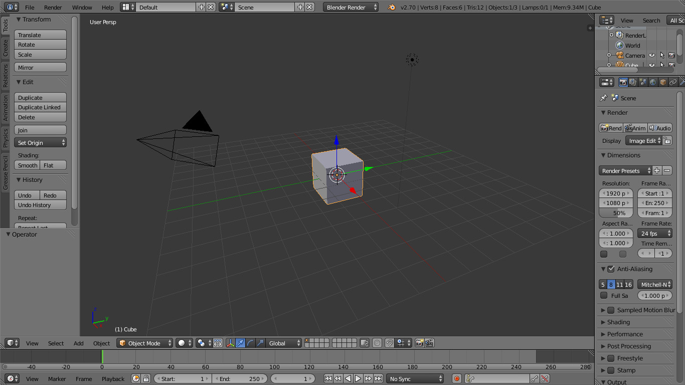

Introdução à Computação Gráfica
Anderson Tavares
acmt@ime.usp.br
Blender e Leitor de OBJ
Objetivos
- Navegar pelo Blender
- Aplicar materiais no Blender
- Aplicar texturas
- Exportar no formato OBJ
- Criar um parser no JavaScript
- Exibir o OBJ no WebGL
Blender
- Um dos Programas de Modelagem 3D
- Concorrente gratuito aos comerciais: Maya, 3D Studio Max...
- Seu tamanho na época inicial: 1.44MB (Cabia no disquete)
- Regra de ouro: uma mão no mouse e outra no teclado.
- Tudo tem atalho.
Navegar pelo Blender

Navegar pelo Blender
- Alguns atalhos
Parser OBJ
- O formato Wavefront OBJ te dá:
- O arquivo onde estão os materiais
- Uma lista de objetos
- Para cada objeto:
- Uma lista de posições
- Uma lista de coordenadas de textura
- Uma lista de normais
- Uma lista de faces. Cada face contém:
- Vértices no formato \(I_P\)/\(I_T\)/\(I_N\)
- \(I_P\): Índice da posição na lista
- \(I_T\): Índice da coordenada de textura
- \(I_N\): Índice da normal
Formato OBJ

|
|
Indexação
- O OBJ tem índice para cada atributo: \(I_P\)/\(I_T\)/\(I_N\)
- O OpenGL/WebGL tem apenas um índice
- Então precisamos tratar o trio de atributos \(I_P\)/\(I_T\)/\(I_N\) como um vértice de índice \(I_V\)
- Se existir um trio exatamente igual, então repete-se o \(I_V\) (significa que outra face está utilizando o mesmo vértice)
- \(I_P\)/\(I_T\)/\(I_N \neq \color{red}{I_{P'}}\)/\(I_T\)/\(I_N \neq I_P\)/\(\color{red}{I_{T'}}\)/\(I_N \neq I_P\)/\(I_T\)/\(\color{red}{I_{N'}}\) (significa que faces estão utilizando vértices diferentes, mesmo que contenham a mesma posição)
Passo 0: Criar variáveis
1 2 3 4 5 6 7 8 9 10 11 12 13 14 15 16 17 18 19 20 21 | |
Passo 1: Ler o arquivo
- Utilizando o XMLHttpRequest (Nativo)
1 2 3 4 5 6 7 8 9 10 11 12 13 14 15 16 17 18 19 | |
Passo 1: Ler o arquivo
- Utilizando o JQuery (Biblioteca Canivete Suíço)
1 2 3 4 5 6 7 | |
Passo 2: Capturar cada linha
- Em XMLHttpRequest
1 2 3 4 5 6 7 8 9 10 11 | |
- Em JQuery, é o mesmo a partir do
var linhas...
Passo 3: Tratar a linha
1 2 3 4 5 6 7 8 9 10 11 | |
Passo 4: Tratar o objeto
- o Objeto
1 2 3 4 5 6 7 | |
Passo 5: Coletar as posições
- \(\color{red}{v}\) \(v_x\) \(v_y\) \(v_z\)
1 2 3 4 5 6 7 8 | |
Passo 6: Coletar as coordenadas de textura
- \(\color{red}{vt}\) \(vt_s\) \(vt_t\)
1 2 3 4 5 6 7 | |
Passo 7: Coletar as normais
- \(\color{red}{vn}\) \(vn_x\) \(vn_y\) \(vn_z\)
1 2 3 4 5 6 7 8 | |
Passo 8: Trabalhar os índices
1 2 3 4 5 6 7 8 9 10 11 12 13 14 15 16 17 18 19 20 21 22 | |
Passo 9: Indexar os vértices
- Adicione este vetor de flags no passo 3
1 2 3 | |
- Agora continuando o Passo 9
1 2 3 | |